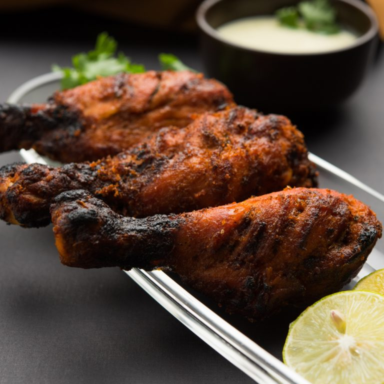

Tandoori Chicken

Description
This is an authentic recipe for tandoori chicken. Serve with long-grain basmati rice, grilled veggies, roasted corn on the cob, and a cucumber salad, then finish off the meal with kulfi (Indian ice cream).
Ingredients
- 4 tsp Kashmiri chilli powder
- 2 tsp salt
- 2 tbsp vegetable oil
- 4 boneless skinless chicken breasts cut into 1 ½ inch pieces
- 4 tbsp Greek yoghurt or hung curd
- ½ tsp garam masala
- ½ tsp ground coriander
- ½ tsp Cumin Powder
- 1 tsp turmeric powder
- ½ tsp cardamom crushed
- ¼ tsp Cinnamon crushed
- ¼ tsp ground nutmeg
- 1 tsp fresh ginger grated
- 1 garlic clove peeled and grated
- 1 Lemon juiced